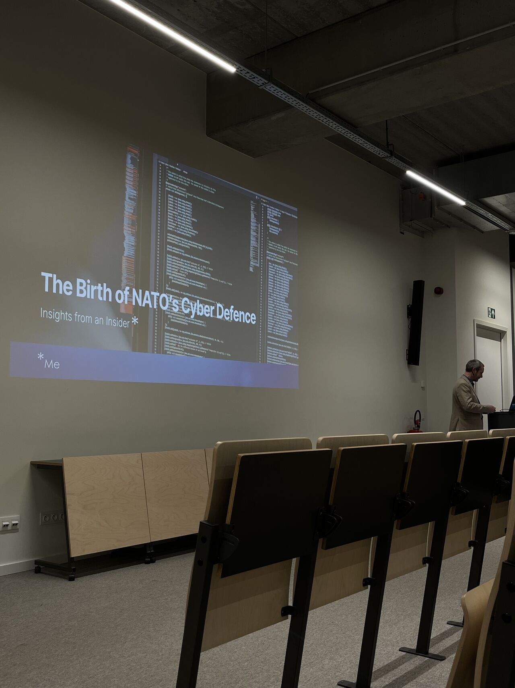

Event type: Tech & Meet
Speaker: Martin De Pauw
Topic: Cyber defence, strategy and critical infrastructure

I attended a Tech & Meet session about the development of NATO’s cyber defence capabilities, presented by Martin De Pauw. The session provided a broader view of cybersecurity by connecting technical threats with strategy, planning and collaboration.
One of the most interesting points was that cybersecurity is not a new challenge. The speaker referred to the world’s first digital weapon in 2010 and connected it to today’s threats, such as zero-day vulnerabilities, advanced persistent threats and weaponised AI. This showed how cyber threats have evolved and how important it is for organisations to keep adapting.
The session also highlighted the need for civil and military cooperation. Cybersecurity is not only the responsibility of technical teams; it also involves governments, organisations, regulations and society. The creation of NICC in 2024 was mentioned as an example of this growing need for coordination.
Several topics connected strongly with my own interests, especially Zero Trust, disaster recovery, risk management and incident response. These areas showed that strong cybersecurity depends on more than tools alone. People, processes and preparation are just as important.
Overall, this was one of the most thought-provoking sessions I attended. It helped me see cybersecurity from a strategic and societal perspective and reinforced my interest in security architectures that protect critical systems.